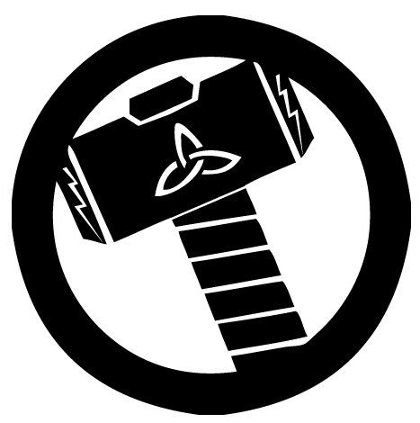
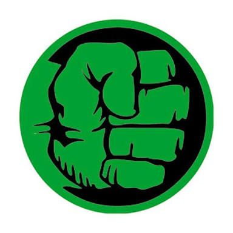
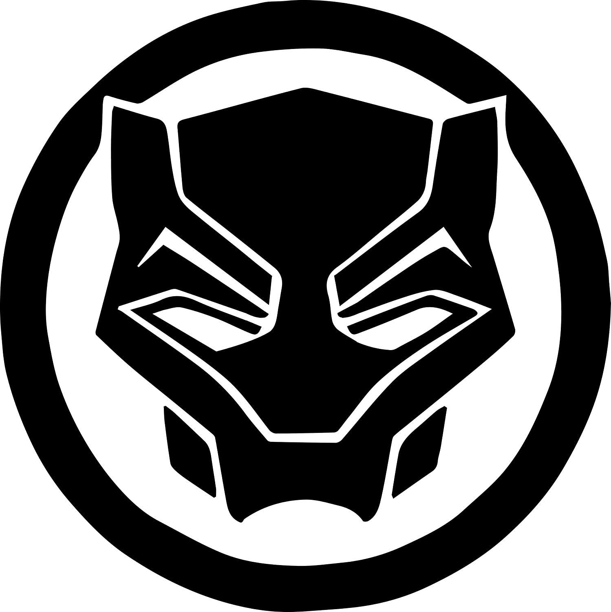
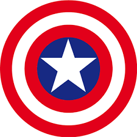

Formación Académica
- 2017-2018: Maestria en Gemas del infinito - ASGARD
- 1991-1993: Especialización en Inteligencia Artificial - CASA
- 1986-1989: Ingeniería Eléctrica - MIT
- 1986-1989: Ingeniería Electronica - MIT
Experiencia Laboral
- 2010-2018: Lider Vengadores
- 2006-2010: Iron Man
- 1991-2006: Director Ejecutivo de Stark Industries



